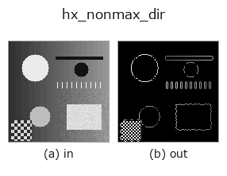

halcon_ext op• Data kinds: image → image
• Call: fullseye.apply(img, "hx_nonmax_dir", a=0.5, b=0.5) (2-D model = एक image + दो scalar knobs a,b∈[0,1])
• HALCON समकक्ष: nonmax_suppression_dir (अर्थ और parameters समझने के लिए HALCON reference उपयोगी है)

*Figure synthetic 128×128 input पर सच में चलाकर मिला output है। बाईं ओर input, दाईं ओर output। Point clouds ऊपर से देखे गए scatter के रूप में (brightness = z), 1-D series line के रूप में, volumes z दिशा में maximum-intensity projection के रूप में, videos बीच के frame के रूप में, complex images amplitude के रूप में, और जो return values चित्र नहीं बन सकते वे स्वयं values के रूप में दिखाए जाते हैं।*
Knob a को बदलकर (0.1 / 0.5 / 0.9, दूसरा knob default पर):
▸ hx_nonmax_dir: knob a को बदलने का figure (docs site)
*Knob b output नहीं बदलता (मापा गया: 0.1 / 0.5 / 0.9 पर एक जैसा)।*
दूसरी images पर भी (synthetic scene / photo / coins। ऊपर की row में inputs, नीचे की row में उनके outputs। Knobs default पर):
▸ hx_nonmax_dir: दूसरी images पर output (docs site)
*चौथा column colour (H,W,3) input है। यह op channels को पार किए बिना colour संभालता है (colour channel को तीसरे spatial axis की तरह convolve नहीं करता)।*
Gradient दिशा के साथ non-maximum suppression (Canny का NMS stage)। Edges को 1 pixel तक पतला करता है।
Sobel से gx (column दिशा) और gy (row दिशा) लेकर amplitude hypot(gx, gy) और दिशा arctan2(gy, gx) mod 180° निकालता है। दिशा को 45° के अंतर पर 4 sectors में quantize करके, हर pixel की उसके sector के अनुरूप 2 पड़ोसी pixels से तुलना करता है, और केवल mag >= both neighbours वाले pixels रखता है (बाकी 0)। बचे amplitude को min-max से [0,1] में normalise करके a*0.3 से कम मानों को 0 कर देता है।
• a → कमजोर edges का threshold a*0.3 (normalise के बाद के मान पर; a=0 पर कोई threshold नहीं)।
• b उपयोग नहीं होता।
ध्यान देने योग्य बातें:
• पड़ोसी तुलना np.roll से होती है, इसलिए image के किनारे पर विपरीत ओर के pixels से तुलना होती है (किनारे के 1 pixel पर भरोसा न करें)।
• तुलना >= है, इसलिए समान amplitude वाली आदर्श step edge 2 pixels चौड़ी बची रहती है (1 pixel नहीं बनती)।
• वर्तमान implementation में 45° और 135° sectors में तुलना होने वाले पड़ोसी pixel pairs आपस में बदल गए हैं, इसलिए तिरछी edges की तुलना gradient दिशा में नहीं, बल्कि
edge के साथ की दिशा में होती है। इस कारण horizontal और vertical edges thin होती हैं, पर तिरछी edges लगभग thin नहीं होतीं (blur की गई diagonal step edge पर लगभग 1400 pixels जैसे के तैसे बचे रहने का माप)। तिरछी edges का thinning चाहिए तो canny या skeleton पर विचार करें।
sobel_amp जैसी amplitude image नहीं, बल्कि मूल gray image दें (अंदर ही differentiate होता है)। बाद में hx_close_edges / hx_detect_edge_segments / threshold।
Values की तुलना (मापा गया): output को उसी image के अधिकतम से normalise किया गया है (output का अधिकतम हमेशा 1.0 होता है, और input को किसी constant से गुणा करने पर भी output नहीं बदलता)। इसलिए अलग-अलग images के values की तुलना नहीं की जा सकती — समान ताकत वाले feature का value भी इस पर निर्भर करता है कि उस image में सबसे मज़बूत feature कौन-सा है। केवल कमज़ोर features वाली image में noise 1.0 तक उठ जाता है। images के बीच तुलना करनी हो तो किसी साझा reference से फिर से भाग दें।
खाली frame (मापा गया): एक समान brightness वाली image देने पर brightness चाहे जो हो, परिणाम खाली होता है (सभी pixels background 0)। पूरी सफ़ेद हो या पूरी काली, एक जैसा व्यवहार होता है; केवल brightness से कुछ detect नहीं होता।
• gallery2d_halcon_ext family guide
• Sample data catalog (DL URL / license) — 2-D के लिए skimage.data (BSD/public) + synthetic, 3-D के लिए real data sources (Stanford/PDS आदि) के DL URL।
• Operators का स्रोत और संदर्भ — इस op family के मूल research/methods के स्रोत।
• Algorithm का मानक स्रोत (लेखक, वर्ष) और उपयोग ऊपर की family usage guide में दिए गए हैं।
नीचे का program सच में चलता है, यह जाँचा गया है (figure वाला ही input)। Studio की help में यह block buttons बन जाता है, जिनसे इसे वहीं load करके चलाया जा सकता है।
hx_nonmax_dir 0.50 0.50
▸ यह pipeline load करें · Load करके चलाएँ
• gallery2d_halcon_ext — py -3.11 examples/gallery2d_halcon_ext.py
image को input के रूप में लेते हैं)identity · gaussian · mean_box · bilateral · unsharp · median · min_filter · max_filter
halcon_ext)hx_gen_circle · hx_gen_ellipse · hx_gen_rectangle2 · hx_gen_checker_region · hx_gen_grid_region · hx_gabor · hx_fit_surface1 · hx_fit_surface2
*Provenance: ops.py — 2D operator registry. यह per-op note tools/opdocs.py md से अपने-आप generate होता है (हाथ से edit न करें)।*
© 2026 Kazufumi Furuse — Fullseye operator documentation. Licensed under Apache-2.0.